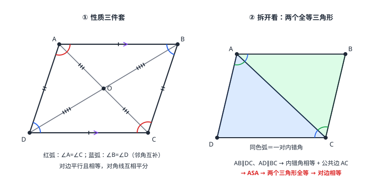

平行四边形
两组对边分别平行的四边形叫平行四边形。性质三件套：对边平行且相等、对角相等（邻角互补）、对角线互相平分——全部能用「连一条对角线拆成两个全等三角形」证出来。判定五条路线里最高频的是「一组对边平行且相等」。它不稳固、能变形，这正是伸缩门与活动衣架利用的性质。
| 所属主题 | 四边形 |
|---|---|
| 所属模块 | 几何 |
| 课标学段 | 第四学段（7~9 年级） |
| 前置知识 | 相交线与平行线、全等三角形 |
| 核心素养 | 推理能力几何直观模型观念 |
教材定位
人民教育出版社《人教版（2024版）义务教育教科书·数学》
八年级下册第21章 四边形21.2 平行四边形
对应八下 21.2：平行四边形的性质、判定与对角线的性质。
说明
定义：两组对边分别平行的四边形叫平行四边形，记作 \square ABCD。定义本身就是一条判定（两组对边都平行即得）；反过来，「是平行四边形」立刻给出两组对边分别平行——定义是性质与判定的共同体。
性质三件套：①对边平行且相等；②对角相等、邻角互补（对边平行被对角线或边一截，内角配成互补对）；③对角线互相平分——两条对角线的交点同时是它们的中点，也是图形的「中心」：绕这点旋转 180^\circ 后图形与自身重合（这一旋转性质到 轴对称与中心对称 再展开，这里先用结论）。
判定清单：①定义（两组对边分别平行）；②一组对边平行且相等；③两组对边分别相等；④两组对角分别相等；⑤两条对角线互相平分。条件落在哪一类（给边、给角、还是给对角线），就选哪条路。
使用场景
伸缩门与活动衣架：平行四边形「不稳固」恰是用途——推动时角在变、形状在变，但对边始终平行且长度不变，门能收拢拉伸、衣架能升降折叠。把一条对角线钉上，框架变成两个三角形，立刻推不动——稳定性与不稳定性各有所用。
裁剪与对折校准：沿对角线剪开平行四边形，得到两个全等三角形（面积各半）；对角线互相平分让交点天然是「平分点」，图纸打样、布料对折时用来快速找中心。
注意点
判定②「一组对边平行且相等」强调同一组对边：必须是既平行又相等的那一组才成立。只有「一组平行、另一组相等」（两条不同的边）拼不出平行四边形——那是梯形一类的形状，梯形与中点四边形 再展开。
「对角相等」别写成「对角线相等」：前者是任何平行四边形都有的角关系；后者是特殊平行四边形才有的性质（下一篇展开）。一字之差，结论差一个等级。
对角线互相「平分」，不是互相垂直、也不是相等：三条性质分属三个层级——平分是平行四边形级别，垂直、相等要加限制条件才有。
证明

图 1：左——对边相等、对角相等、对角线互相平分（OA=OC，OB=OD）；右——沿对角线剪开，内错角相等 + 公共边 → ASA → 两个三角形全等
证明
结论 1平行四边形的对边相等、对角相等。
证对边相等、对角相等：连对角线 BD。AD\parallel BC 得 \angle ADB=\angle CBD（内错角，相交线与平行线）；AB\parallel DC 得 \angle ABD=\angle CDB（内错角）；BD 公共——ASA，\triangle ABD\cong\triangle CDB。对应边即得 AB=CD、AD=BC；对应角即得 \angle A=\angle C，同理连 AC 可得 \angle B=\angle D（图 1 右）。
关键一步依据是 ASA 的三组条件：两组内错角分别由 AD\parallel BC、AB\parallel DC 给出（平行线的性质），公共边 BD 夹在这两对角之间，正好是 ASA 要求的两角及其夹边。条件位置对得上，才能全等；全等的对应边、对应角相等就是平行四边形的性质。
结论 2平行四边形的两条对角线互相平分。
证对角线互相平分：设 AC、BD 交于点 O。由 AB\parallel DC 得 \angle OAB=\angle OCD、\angle OBA=\angle ODC（两对内错角），又 AB=CD（第一步刚证）——AAS，\triangle AOB\cong\triangle COD，所以 OA=OC、OB=OD（图 1 左）。
关键一步依据是 AAS：两对内错角给出两组相等角，AB=CD 用的是第一步刚证出的对边相等——这条边正落在两角的对边位置，用 AAS 正好。O 在 AC、BD 上，OA=OC 与 OB=OD 说明 O 既是 AC 的中点也是 BD 的中点，这就是「互相平分」。
结论 3一组对边平行且相等的四边形是平行四边形（判定②）。
从任意满足条件的四边形出发：四边形 ABCD 中，AB\parallel CD 且 AB=CD，连对角线 AC。AB\parallel CD 给出内错角 \angle BAC=\angle DCA（相交线与平行线）；加上 AB=CD 与公共边 AC，由「边角边」得 \triangle ABC\cong\triangle CDA。全等给出对应角 \angle DAC=\angle BCA，这又是一对内错角，于是 AD\parallel CB，同时 AD=CB。两组对边分别平行（判定①的条件齐了），所以 ABCD 是平行四边形。
关键一步依据是全等：平行条件贡献一对内错角，加上已知的一组对边相等与公共边，凑齐「边角边」；证出另一组对边平行且相等后，落回判定①。把两个全等三角形沿一对对应边反向拼合的拼图实验可以帮助想到这个证法，但实验只是启发，证明必须从任意满足条件的四边形出发。
结论 4「边定形定」只在三角形成立，四边形比三角形多一个自由度。
不稳定性：三角形三边长确定，形状就被 SSS 锁死；平行四边形四边长确定，角还能开合——「边定形定」只在三角形成立，四边形多出一个自由度，这个自由度就是伸缩门的原理。
关键一步依据是 SSS 判定本身：三边长度一旦确定，三角形的形状和大小就唯一确定；四边形的四条边只约束长度、不约束角，平行四边形相邻两边的夹角还可以在一定范围内自由变化，这个未被约束的角度就是多出来的自由度，伸缩门正是它的实际应用。
动手实验
四根木条钉成平行四边形框架，用手推：角在变，对边始终平行、长度不变。再在框架上钉一根对角线木条——框架分成两个三角形，推不动了。量一量变形前后对角线交点到四个顶点的距离：始终两两相等。
解题思路
见平行四边形（性质用法）：求周长用对边相等（周长 =2(长+短)）；求角用「邻角互补 + 对角相等」；对角线问题先找交点——交点平分两条对角线，OA=\tfrac12 AC、OB=\tfrac12 BD。
证平行四边形（判定选路）：条件给「平行」→ 走定义或判定②，再补一条「相等」；给「相等」→ 走判定③，再配角的关系或直接两组对边；给「对角线」→ 判定⑤互相平分。三条路汇于同一个目标。
面积与距离：平行四边形面积 = 底 × 高；平行线之间的距离处处相等（相交线与平行线 的结论），所以换哪条边当底，高都量得一样准——底与高必须配套（同一底上的高）。
按场景的例题
例 1（场景：图形设计） 花坛角度
一块平行四边形花坛 \square ABCD，测得 \angle A=55^\circ，求其余三个角的度数。
解：\square ABCD 中 AD\parallel BC，\angle A 与 \angle B 是邻角（AB 截平行线）：\angle B=180^\circ-55^\circ=125^\circ。对角相等：\angle C=\angle A=55^\circ，\angle D=\angle B=125^\circ。验算：四角之和 55+125+55+125=360^\circ，与四边形内角和一致。
答：\angle B=\angle D=125^\circ，\angle C=55^\circ。
例 2（场景：测量与工程） 围栏下料
平行四边形围栏相邻两边分别为 8 米和 5 米，一条对角线长 10 米。求围栏周长，以及这条对角线被交点分成的两段长。
解：对边相等，周长 =2×(8+5)=26（米）。对角线互相平分，交点 O 把这条对角线分成相等的两段：10÷ 2=5（米）。下料时可用「两条对角线都被交点平分」来校验框架是否装正——注意一般平行四边形只有同一条对角线上的两个顶点到交点等距（OA=OC、OB=OD），并非四个顶点到交点都等距。
答：周长 26 米，对角线被交点平分，每段 5 米。
例 3（场景：竞技与游戏） 拼图挑战
两块全等的三角形纸板，只允许拼接（不许裁剪），怎样拼出一个平行四边形？说明理由。
解：取一对对应边作为公共边，把其中一块旋转 180^\circ 后沿公共边与另一块拼合。公共边两侧的三角形内角互为对顶位置；公共边一侧的两条对应边（例如公共边之外的那对边）由全等知相等，又因分别贴着同一直线的两侧且方向相反，故互相平行——同一组对边「平行且相等」，由判定②，拼出的四边形是平行四边形。
答：把一块旋转 180^\circ 后沿任意一组对应边拼接，即得平行四边形（判定②：该组对边平行且相等）。
常用推论
平行四边形被任一条对角线分成两个全等三角形——面积各半；这也是「倍长」「平移」等辅助线手法的几何来源（三角形的中位线 中位线证明正是倒着用了它）。
夹在两条平行线之间的平行线段相等——平行四边形对边相等可以看成这句话的四边形版本；反过来它也常用来证「两线段相等」。
四个角「两两配对」：\angle A=\angle C、\angle B=\angle D、任一邻角对相加为 180^\circ——知道一角即知四角。
易错点
错用「一组对边平行，另一组对边相等」判定平行四边形。
为什么错平行与相等必须落在同一组对边上；分属两组时可以拼出对边不平行也不相等的四边形（等腰的上下底错位放置就是反例）。
正确判定②：同一组对边既平行又相等。
错把性质写成「对角线相等且互相平分」。
为什么错「相等」不是平行四边形的普遍性质，多了它就变成特殊四边形；乱用会推出不存在的结论。
正确平行四边形对角线互相平分；「相等」「垂直」都需额外条件。
错认为平行四边形也像三角形一样「四边定形定」。
为什么错三角形三边确定即被 SSS 唯一锁定；四边形多一个角度自由度，四边确定形状仍可变形。
正确四边长确定时形状不唯一——这正是伸缩门能开合的原因。
直观理解
平行四边形是一对全等三角形背靠背拼出来的：三角形是砖，两块砖沿对角线拼合、一块旋转半圈贴上来，就得到平行四边形。它的一切性质都藏在这两块砖里——对边相等是全等的对应边，对角相等是全等的对应角，对角线互相平分是两块砖绕拼缝中点对转的结果。它的「晃动」= 两块砖绕公共边开合，钉上一根对角线（再劈出一块砖）就锁死。